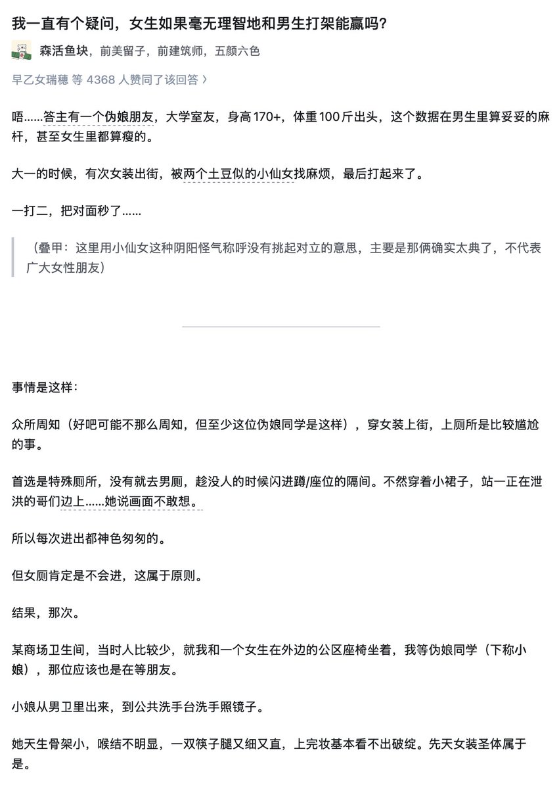
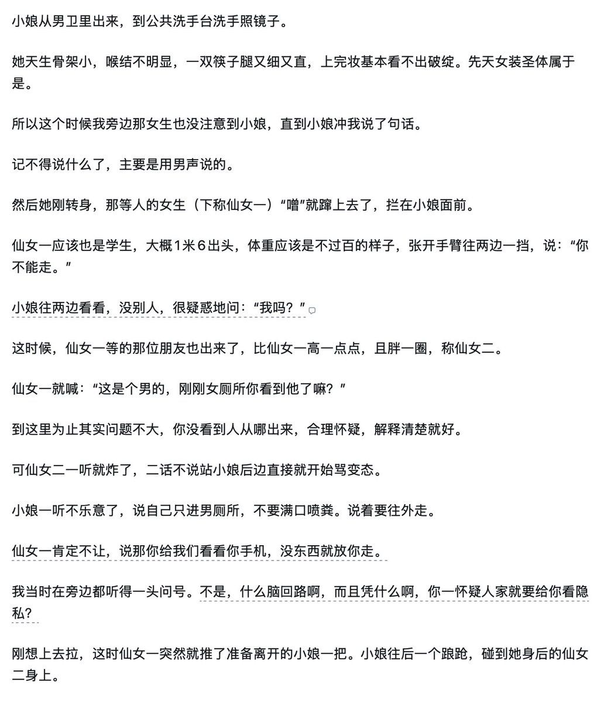
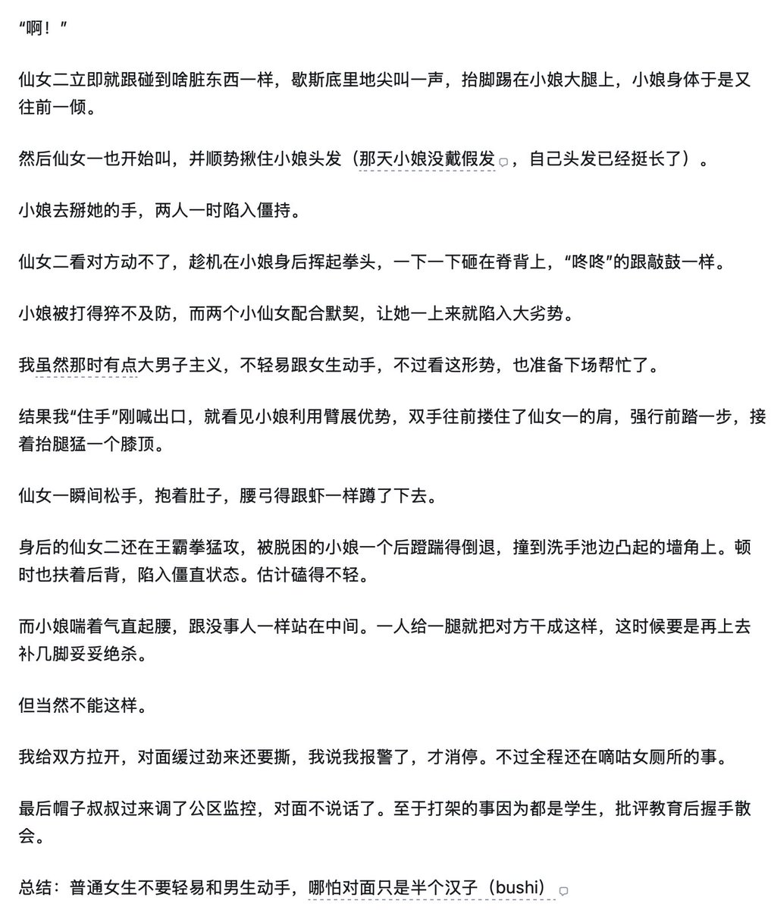

小虚空🍥
@tokerumaisurii
@aliciahan007 其实仔细看的话这篇里面也是有点靠技巧的，手肘膝盖都是那种身体比较受限情况下还能强攻击的好方式，肌肉力量上拉扯并没有赢。



污妖王的远征
@aliciahan007
我有一个“朋友”？ 昂？
说起来打架这回事，这个文里面肯定是术前。
术后的孩纸表示肌肉流失其实很严重的。 真的动手机会可能也就是身材比较高大。
某一天跟Alia打闹，不幸被抢了先手按在的床上。 真的很难挣扎起来。引以为戒
不要打架，不要打架，不要打架 https://t.co/cXHLMC6ztq